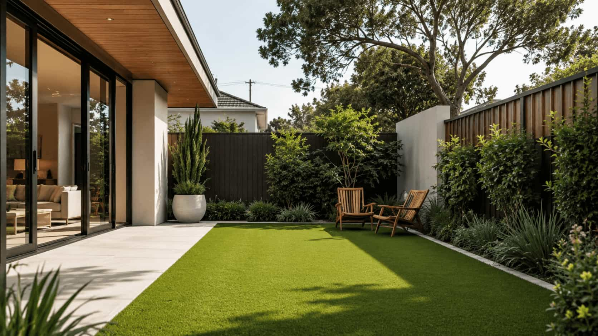
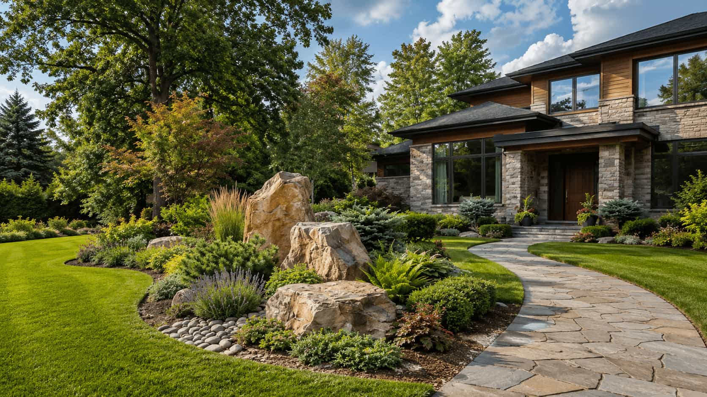
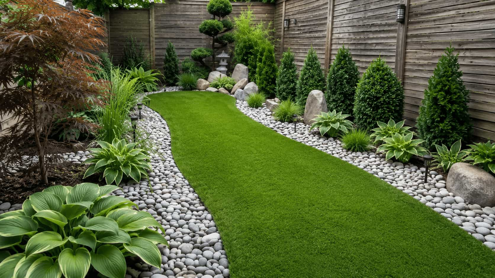
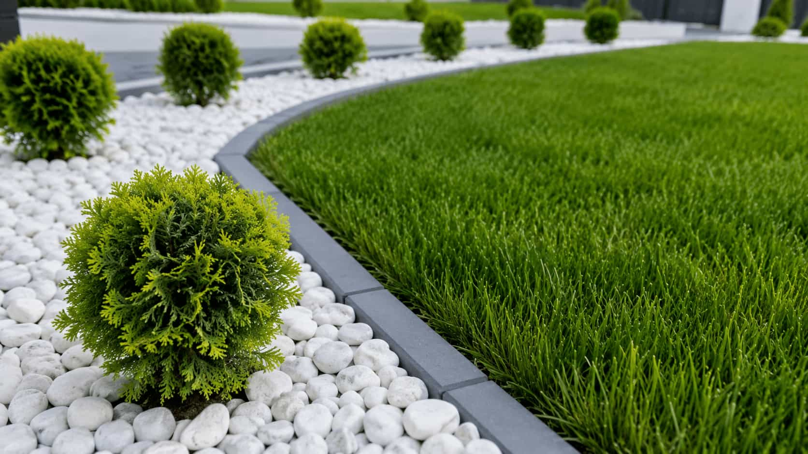
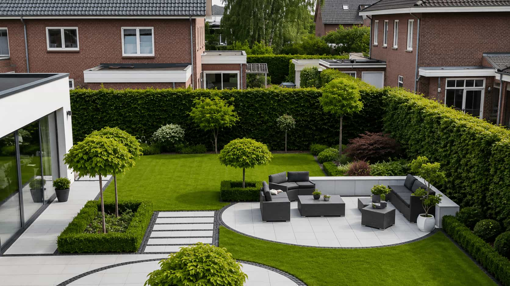
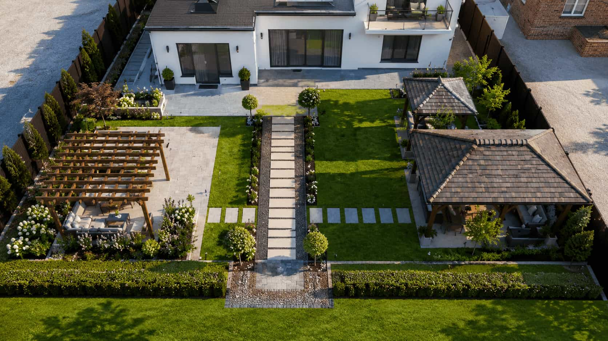
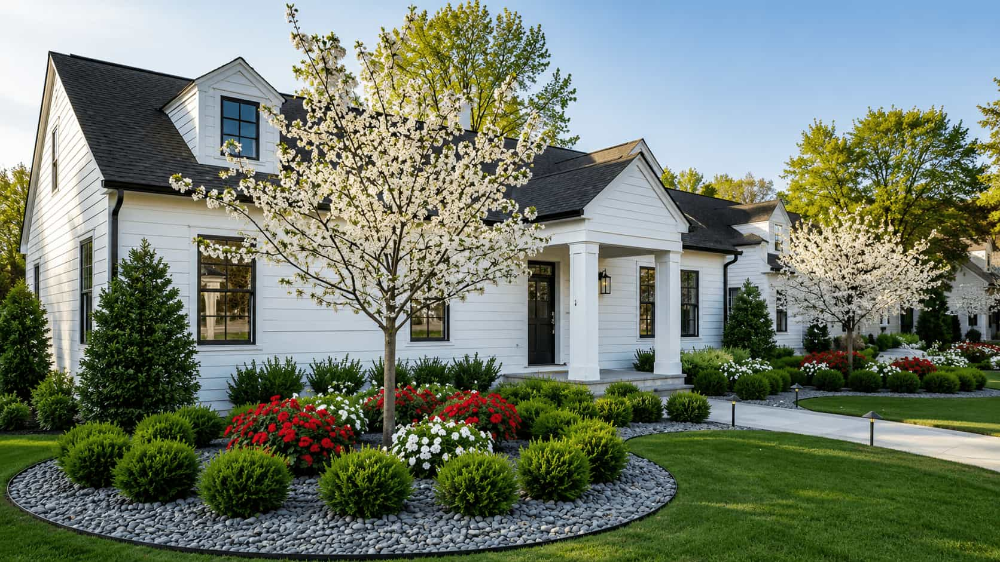

Residential Landscape Design
Thoughtful layouts for arrival, privacy, outdoor rooms, planting structure, and future project phases.

Thoughtful Outdoor Planning
Verdeon helps homeowners and businesses explore practical landscape design options, organize project priorities, and request guidance for properties of every scale.
Complete Landscape Planning for Every Property
Why Plan With Verdeon
Verdeon helps organize property details, planning priorities, and available design directions before major outdoor decisions begin.
Bring property details, outdoor priorities, visual references, and practical questions into one organized inquiry.
Consider access, sunlight, circulation, existing features, terrain, privacy, and the way each outdoor area may be used.
Explore how planting, patios, pathways, lighting, storage, and gathering spaces can work as one coordinated layout.
Separate essential improvements from later additions while protecting the overall long-term landscape direction.
Compare plan views and rendered concepts when additional visual clarity may help explain scale, layout, and atmosphere.
Submit one focused request to explore relevant independent landscape design options where participation is available.
Planning before construction
Successful outdoor decisions start with context: movement, views, light, grade, existing vegetation, architecture, daily use, and the order in which improvements may happen.
Verdeon helps turn those observations into a clearer request—so conversations with independent design professionals can begin with better questions and more useful priorities.
How Verdeon worksDesign options
Select a planning focus to compare scope, imagery, and related questions.

Coordinate circulation, planting, privacy, outdoor rooms, and phased priorities.
Planning principles
Respond to architecture, climate, exposure, grade, access, and existing conditions.
Make movement clear, comfortable, appropriately scaled, and connected.

Consider growth, structure, seasonality, local suitability, and care expectations.
Protect the long-term framework when work needs to happen gradually.
Property context
Residential and commercial properties share spatial principles, but their audiences and operational demands differ.

Home landscapes may need to support arrival, privacy, dining, play, gardening, quiet retreat, changing family needs, and gradual investment. A residential plan can bring those daily moments into one clear framework by studying views from inside the home, sun and shade patterns, planting scale, outdoor room relationships, and the order in which improvements can be phased over time.
Residential planning detailsCommercial settings may prioritize arrival, accessibility, public identity, shared use, durable materials, safety, and operational expectations. A strong site concept helps coordinate pedestrian flow, visible entrances, seating zones, planting maintenance expectations, lighting needs, and the impression visitors, tenants, staff, or customers experience throughout the property.
Commercial planning detailsA thoughtful outdoor concept starts by understanding the property, defining priorities, and arranging every feature into one practical plan.
Frequently Asked Questions
Explore straightforward answers about Verdeon, landscape design requests, project information, phased planning, and independent provider availability.
Share the property type, current conditions, preferred outdoor features, available images, and the priorities you want to explore. Verdeon can help organize that information into a clearer landscape design inquiry.
No. Verdeon is an independent information and provider-matching platform. Verdeon does not directly perform landscape design, construction, planting, lighting, installation, or maintenance.
Helpful information may include the property type, approximate dimensions, photographs, sunlight conditions, access, existing features, preferred uses, design references, timing, and available budget range.
Yes. A coordinated plan may separate essential circulation, primary hardscape, planting, lighting, and finishing details into practical stages while protecting the overall direction.
Yes. Relevant options may depend on property conditions, location, climate, project scope, local requirements, and the availability of participating independent professionals.
2D + 3D visualization
Different visual formats answer different questions; neither replaces technical construction documentation.

Useful for circulation, dimensions, zones, relationships, and planting structure.
Useful for scale, height, viewpoints, material character, and atmosphere.
Landscape Design Services
Explore focused landscape planning categories for residential, commercial, planting, hardscape, lighting, and visualization needs.
Coordinate outdoor rooms, privacy, planting, circulation, views, and practical long-term project priorities.
Explore landscape concepts shaped around arrival, shared use, accessibility, circulation, identity, and durability.

Plan a clearer arrival experience using pathways, planting, screening, boundaries, focal points, and curb appeal.
Organize dining, relaxation, play, privacy, planting, storage, and flexible outdoor gathering areas.
Explore planting structure, seasonal layers, screening, texture, scale, growth, and maintenance expectations.
Study outdoor room proportions, movement, materials, transitions, accessibility, and connections to the property.
Coordinate evening circulation, safety, visual depth, focal moments, atmosphere, and practical control requirements.
Examine scale, viewpoints, planting character, materials, and atmosphere through clearer visual design directions.
Plan with clarity
Share the site, priorities, and questions behind the images that caught your attention.
Tell Us About Your PropertyFrequently asked questions
Availability, scope, and provider participation vary by property and location.
Verdeon helps property owners explore landscape design options, organize project details, and identify relevant independent professionals or providers where available.
No. Verdeon does not directly perform landscape construction, planting, lighting, maintenance, or installation.
No. Early questions, photos, priorities, and known constraints are enough to begin organizing the inquiry.
Yes. A clear overall framework can help separate immediate priorities from later planting, lighting, or finishing stages.
Begin the conversation
Share the context, priorities, and decisions you are working through.